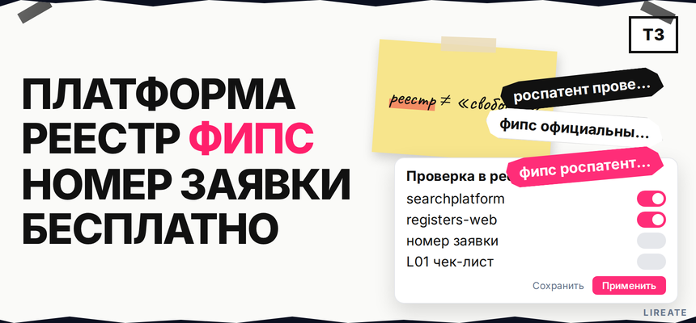
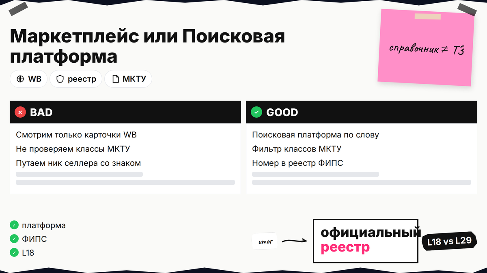
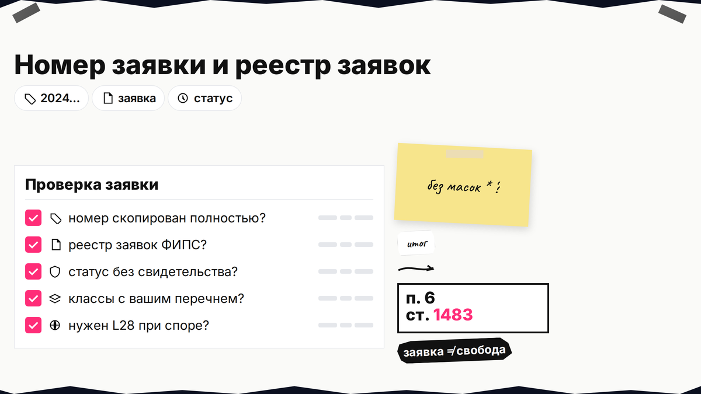
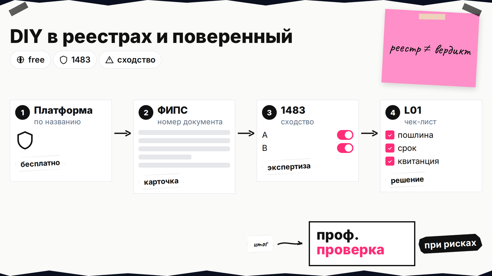

Запрос "роспатент проверить товарный знак по названию онлайн бесплатно" обычно ведёт на три разных сайта: портал Роспатента, ФИПС и Поисковую платформу. Ниже вы пройдёте официальные открытые реестры без платных баз: найдёте знак или заявку по слову, по номеру свидетельства и по номеру заявки, поймёте типичные статусы и увидите, где бесплатного поиска недостаточно для решения "можно ли регистрировать". Полный чек-лист рисков перед подачей - в материале проверка товарного знака перед подачей, здесь только маршрут по реестрам.

TL;DR / Быстрый инсайт: Бесплатно для товарных знаков РФ: Поисковая платформа (по названию, классам, изображению) и открытые реестры ФИПС (точный поиск по номеру свидетельства или заявки; маски `*`, `?` в запросе не работают). Портал rospatent.gov.ru даёт услуги, FAQ и opendata, но не заменяет платформу для текстового поиска. "Свободен" бренд только если в ваших классах МКТУ нет действующих знаков и релевантных заявок, а сходство оценено по п. 6 ст. 1483 ГК РФ - автоматический вывод платформа не даёт. Справочник Wildberries не заменяет реестр: см. проверку бренда на Wildberries.
Гайд для самопроверки на официальных ресурсах. Нормы сверены на 03.11.2026; это не индивидуальная юридическая консультация.
Федеральный институт промышленной собственности (ФИПС) ведёт fips.ru: открытые реестры, бюллетени, классификаторы, приём заявок. Роспатент (rospatent.gov.ru) - ведомство: госуслуги, новости, opendata, FAQ про самостоятельный поиск. С 11.12.2023 текстовый и комбинированный поиск по базе ТЗ РФ вынесен в ИС "Поисковая платформа" (searchplatform.rospatent.gov.ru/trademarks), доступ круглосуточно (FAQ Роспатента).
| Ресурс | URL | Когда открывать |
|---|---|---|
| Поисковая платформа | searchplatform.rospatent.gov.ru/trademarks | Проверка по названию, классу МКТУ, загрузка логотипа |
| Открытые реестры ФИПС | fips.ru/registers-web | Карточка по номеру свидетельства или заявки |
| Opendata Роспатента | rospatent.gov.ru/opendata | Выгрузка CSV реестра ТЗ для аналитики |
| FAQ "где искать" | rospatent.gov.ru/ru/faq/… | Список бесплатных и платных инструментов |
Делайте: начинать с Поисковой платформы для слова, сохранять номера найденных знаков и заявок. Не делайте: искать бренд только в Google или на маркетплейсе - для регистрации важен реестр Роспатента.

На Поисковой платформе задайте словесное обозначение, транслит и опечатки, которые реально используете в бизнесе. Укажите классы МКТУ, в которых планируете регистрацию - знак может быть занят в 35-м классе и свободен в 25-м. Для комбинированного знака загрузите изображение и повторите поиск по визуальной части, если сервис это позволяет; на первом проходе можно дополнительно воспользоваться бесплатной проверкой названия или логотипа в патентном бюро.
Делайте: фиксировать не только тождество, но и похожие знаки в тех же классах. Не делайте: считать пустую выдачу гарантией регистрации - экспертиза оценивает сходство по закону, а не только совпадение строки.
Если известен номер свидетельства (из договора, претензии, бюллетеня), откройте открытые реестры, выберите реестр товарных знаков и знаков обслуживания и введите номер полностью. На этой форме поиск идёт по номеру документа; символы подстановки и диапазоны в запросе не допускаются (справка ФИПС).
В карточке проверьте: обозначение, правообладателя, дату приоритета и регистрации, перечень товаров и услуг по МКТУ, срок действия и отметки о прекращении правовой охраны. Это ответ на запрос "роспатент найти свидетельство" без платных баз.
Делайте: сверять номер на бланке свидетельства с полем в реестре. Не делайте: подставлять часть номера или пробелы, если форма требует точное совпадение.

Отдельный контур - реестр заявок на том же портале открытых реестров. Номер заявки в карточках Роспатента обычно выглядит как цифровой регистрационный номер (часто 10 цифр, первые четыре - год подачи, например заявки 2024 года начинаются с "2024"). Точный формат смотрите в поле "номер заявки" в вашей копии документов или в карточке на платформе - не выдумывайте номер по шаблону.
Алгоритм:
Делайте: учитывать поданные заявки конкурентов при оценке риска. Не делайте: игнорировать заявки только потому, что свидетельства ещё нет.
Запрос "проверка бренда зарегистрирован или нет" сводится к чтению карточки:
Сравнивайте не только название, но однородность товаров в классах. Черновую однородность можно оценить через инструменты из FAQ Роспатента; спорные случаи по п. 6 ст. 1483 - к поверенному.
Делайте: вести таблицу "номер - статус - классы - риск". Не делайте: трактовать "отказ по заявке конкурента" как автоматическое освобождение названия для вас без повторного поиска.

Бесплатная база товарных знаков в смысле закона - открытые данные Роспатента и Поисковая платформа, а не коммерческие "антиплагиат" для брендов. Ограничения DIY:
Делайте: после DIY пройти чек-лист проверки перед подачей перед оплатой пошлин. Не делайте: путать предварительную информационную оценку ФИПС (платная услуга) с обязательной экспертизой по заявке.
К поверенному или на предоценку ФИПС - при комбинированном знаке, нескольких близких результатах в классах, крупных вложениях в бренд или претензии. Справочно по документам: +7 (495) 531-6340 (ФИПС).
После бесплатного прохода по реестрам можно заказать платную проверку товарного знака на Лирейт или сопровождение подачи на странице регистрации.
Маршрут бесплатной проверки:
Название и классы МКТУ → Поисковая платформа → номера знаков и заявок → открытые реестры ФИПС → таблица рисков → чек-лист проверки перед подачей → заявка или доработка обозначения
Материал проверен: эксперт Елена Ковалева (главный эксперт по SEO/GEO), редакция Лирейт.
Достоверность данных: FAQ и opendata Роспатента, открытые реестры и справка ФИПС, Поисковая платформа, п. 6 ст. 1483 ГК РФ сверены с официальными источниками на 03.11.2026. Показы Яндекс Wordstat в среде подготовки материала не запрашивались.
В Поисковой платформе Роспатента - это бесплатный контур для текстового и части визуального поиска по базе ТЗ РФ (FAQ).
fips.ru - операционный сайт ФИПС: реестры, бюллетени, приём документов. rospatent.gov.ru - портал ведомства: услуги, нормативка, opendata. Для поиска по слову чаще начинают с Поисковой платформы, для карточки по номеру - с открытых реестров.
Откройте реестр товарных знаков на registers-web, введите номер свидетельства целиком, без масок.
На практике это цифровой регистрационный номер заявки, часто 10 цифр с годом в начале (например, заявки 2025 года начинаются с "2025"). Берите номер из карточки на платформе или из уведомления, не сокращайте его.
Нет. Нужна оценка сходства с найденными знаками и заявками в однородных классах и абсолютных оснований по ст. 1483 - см. чек-лист проверки перед подачей.
Да, при экспертизе вашей заявки учитываются ранние заявки и знаки третьих лиц в смысле п. 6 ст. 1483; мониторьте реестр заявок.
Эта статья — пошаговая навигация по сайтам ФИПС, Роспатента и форматам номеров; чек-лист проверки перед подачей — полный перечень рисков и решений перед заявкой.